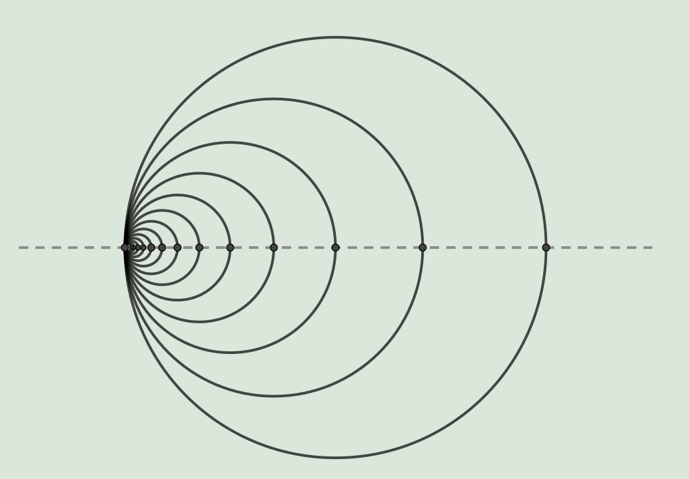

Koen Bresters
Graduate student at Freie Universität Berlin, as part of the Berlin Mathematical School.
I'm interested in applications of (\(\infty\)-) categorical and (higher) algebraic tools to algebraic topology, algebraic geometry and mathematical logic.
Currently I'm working on relating the sheaf-based homology theory considered in my bachelor thesis to the notion of shape of \(\infty\)-topoi, which is expected to reveal further properties and comparison results.
Contact
- email: koenbres [at] gmail [dot] com
- github: koenbres04
Mathematical works
- Bachelor thesis at Leiden University, 2024, supervised by dr. Robin de Jong: Sheaf Homology
CV
See here.
Talks
Conference/workshop attendence
- Workshop on Six-Functor Formalisms, TU Darmstadt, November 17-19, 2025, see this
- Conference Higher Invariants: interactions between arithmetic geometry and global analysis, Regensburg October 6.-10. 2025, see this
Math-related side-projects
- ResetOpimization: An optimization algorithm for deciding when to reset a speedrun of a game based on your current splits, maximizing the expected time to beat a goal time.
- FactorioCalculations: Some (poorly documented) python code using linear programming to optimally design factories in Factorio.
(I plan to document it better when I play the Space Age expansion.)
- Other older or poorly documented projects can be found on my github.
Gallery
|
Me standing akwardly next to the largest real-world Utah Teapot.
|

From my bachelor's thesis:
Applying Mayer-Vietoris to the bottom & top half of the Hawaiian earring shows its
1st sheaf homology is the same as the 0th sheaf homology of a convergent sequence, namely the topological product \(\prod_{n=0}^\infty\mathbb{Z}\)
From my bachelor's thesis:
A different way of drawing the topologists sine curve, making it more clear why its first homology
should be the formal limit \(\lim_{n\to\infty}\bigoplus_{m\geq n}\mathbb{Z}\)